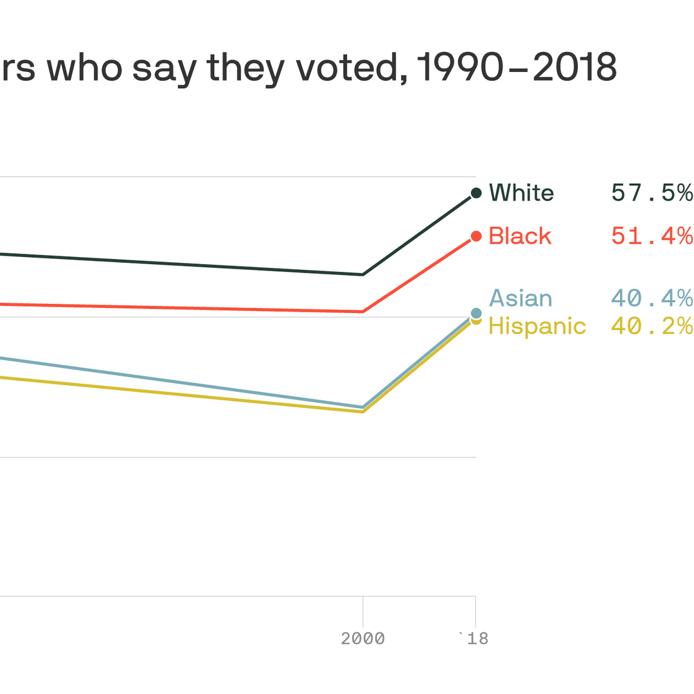

6.The Hard Truth of voter suppression
In this special Saturday episode, Axios kicks off Hard Truths, a project examining systemic racism in our country.This will be a yearlong series covering a new topic each month — education, housing, technology and health care.With a bitter election just days away we start with voting, specifically voter suppression.
Posted On: 2020-10-17T00:00:00
Posted By: Axios

Content Date: 2020-10-17
Download Date: 2021-05-15
Document ID: L0C04CC69